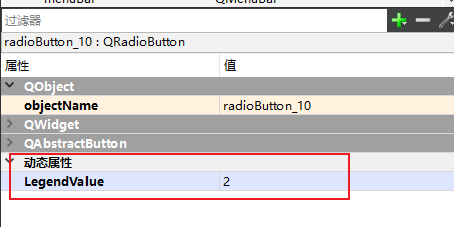
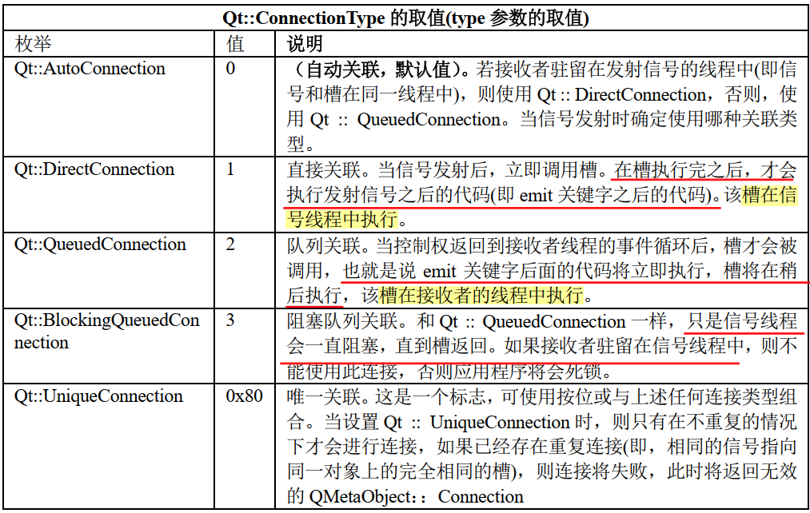
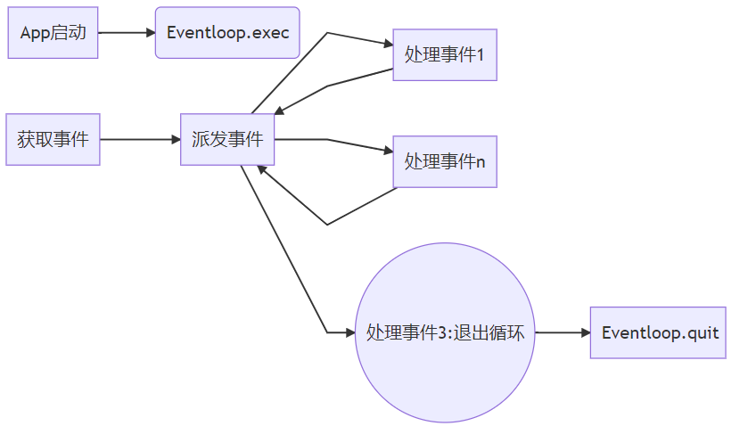
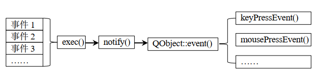
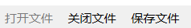

01 核心机制
Qt的核心机制
1.元对象系统
Qt的元对象系统是Qt框架的一个核心组成部分，它提供了一种在运行时实现反射（reflection）功能的机制
使得Qt能够实现一些高级的特性：比如信号与槽（Signals and Slots）、对象属性系统、和对象间的事件处理等。
1.1元对象
- 元对象在Qt中通常指的是：由元对象编译器（moc）生成的用于描述类信息的名为
moc_xxx.cpp的文件，其中xxx是原文件的名称。这些moc_xxx.cpp文件包含了类的元对象信息：==包括类的名称、父类信息、信号与槽信息、属性信息==等。在运行时，Qt通过这些元对象信息实现了诸如信号与槽连接、属性访问、动态属性等高级功能 - 只有
QObject的派生类才能使用元对象框架的这些特性 - Qt中专门用
QMetaObject类来做这件事情。该类的一些成员函数可以获取其他对象的一些属性。在QObject这个宏定义里面，实际上就创建了一个QMetaObject对象。
该框架的实现主要依靠**元对象编译器(moc)**，这是Qt库里的一个可执行文件，实际上我们写的Qt代码里面的一些语法并不是原生C++，而是对其进行了一些扩展，moc就负责将这些“扩展语法”转成标准格式的C++形式。
2.反射
反射是许多语言都有的特性，但是C++没提供原生的反射机制 ，Qt提供的反射是通过元对象系统来实现的。
2.1反射的定义
用一句通俗的话来讲就是反射提供了某种基础设施，使得程序员能够在运行程序时通过代码查询到某个具体类型的各种类型信息，并且能通过非常规手段创建对象实例和调用对象方法以及读写对象的属性。
2.2反射的应用
对于普通程序员来说，反射可能很少用到，因为一般创建对象就用new，调用方法就用->。
但是对于框架来说，反射的价值非常大。比如，想实现在XML配置文件中中配置类型名称和方法名称及属性名称，然后在程序运行时软件框架可以自动化的创建出所配置的类型名称对应的类的对象实例，然后还可以在框架中调用对象上的方法，还可以读写对象上的属性。还有个常见的场景，就是序列化，之前我在C++序列化的时候，得一个字段一个字段的写，但是JAVA却不用这样，因为JAVA有反射，可以在程序运行时知道类的结构。
可能有的人会想，软件框架为什么不遵循C++语言规则直接new一个对象实例，然后使用.或->运算符去正常调用对象上的方法呢？ 原因可能是软件框架在编译时尚不知道框架的用户会创建哪一个类的对象实例，更不知道会调用哪一个方法，读写哪一个属性。对于软件框架而言，通常是先有框架，然后才会有框架的用户去使用这个框架。对于框架的作者而言，只有使用反射机制才能实现这种功能。这个可能是反射机制的最大的价值所在，也是不可替代的价值所在。
比如PaddleSeg使用Yaml配置文件来描述要创建的模型对象，就利用了反射机制。
3.属性系统
属性(property)是Qt引入的另一个机制，与成员变量有点像，但不属于成员变量。属性可以应用元对象系统，实现：关联信号槽以及属性的反射（即动态查询变量）
3.1属性的分类
Qt的属性可以分为静态属性以及动态属性，他们有以下区别：
- 动态属性：
- 动态属性是在运行时动态地添加到对象上的，通常是通过调用
QObject::setProperty()函数来实现的 - 动态属性不能像静态属性那样设置读写器，属性发生变化时发射对应信号
- 动态属性不会在类的定义中声明，因此不能像静态属性一样通过编译器静态检查和类型安全
- 动态属性对于扩展Qt类的功能非常有用，可以根据需要动态地添加属性，而无需修改类的源代码
- 动态属性适用于需要在运行时动态配置的场景，比如用户自定义的配置项或者用户界面的控制
- 动态属性是在运行时动态地添加到对象上的，通常是通过调用
- 静态属性：
- 使用
Q_PROPERTY宏声明的属性是静态的，它们在类的定义中明确定义，并且可以通过编译器静态检查和类型安全 - 这些属性通常与Qt的元对象系统一起使用，以支持信号与槽、属性的动态查询等特性
Q_PROPERTY允许为属性提供读取函数、写入函数和通知信号，使属性能够与信号槽机制无缝集成，同时也提供了一些元信息
- 使用
Qt提供的各个控件基本都用到了属性，而且基本是都是静态属性
3.2静态属性的声明
使用Q_PROPERTY(type name READ getterFunction WRITE setterFunction NOTIFY notifySignal)可以完成对于属性的声明，其中：
type: 属性的数据类型，比如int、double…..name: 属性的名称getterFunction: 读取属性的成员函数（需要自己定义）这个函数返回属性的值。setterFunction: 写入属性的成员函数（需要自己定义）这个函数接受一个参数，用于设置属性的值。notifySignal: 用于在属性值发生变化时发射的信号（需要自己定义）
静态属性通常需要==绑定==一个成员变量，对于静态属性的读写实际上是对成员变量的读写
个人感觉属性相对于成员变量的==最大的优势==就是：在属性发生变化时，可以发送一个信号
1 | class MyClass : public QObject |
MyClass类具有一个名为value的属性，其类型为int。getValue()和setValue(int)分别用于读取和写入属性值。valueChanged(int)是属性值变化时发射的信号
3.3动态属性的声明
使用Qt Designer添加动态属性：

使用代码添加/读取动态属性：
1 | QObject::property(); |
3.4动态属性的应用
动态属性多用于多个控件需要访问一个槽函数的场景，比如由10个功能类似的按键，如果每个按键都写一个槽函数，那么会非常的冗余。可以将他们全部与一个槽函数绑定，并通过动态属性给每个按键一个idx属性，在操函数中根据idx即可知道是哪个按键，再做对应的操作即可。
4.信号与槽机制
主要作用：实现对象间的松耦合通信，比如A发个信号控制B进行相应的动作。
该机制的实现同样利用了元对象框架，因此必须继承QObject，并加上Q_OBJECT 宏定义且信号和槽都是类的成员函数而不是全局函数。
4.1信号的语法规则：
只需要声明该函数，不用定义，可以有形参
返回值必须是
void声明前加
signals:且不能出现public、private等访问控制符，默认是public的
4.2槽的语法规则
- 声明前加
slots:且必须加上public、private等访问控制符 - 槽函数可以当成普通的成员函数直接调用
4.3发射信号的语法规则：
使用
emit关键字发送，比如定义信号void f(int)则通过emit f(3);来发送信号.因为信号的声明在类内，因此==发射信号的位置==要格外注意，需要在该类的成员函数内或其他能访问信号的位置。
4.4关联信号和槽
使用QMetaObject::Connection connect(sender,signal,receiver,slot,ConnectionType)这个函数进行关联，该函数有多个重载版本
返回值
QMetaObject::Connection是连接的句柄，通过该句柄后续可以断开连接。ConnectionType是连接类型，该参数决定了信号是立即传送给槽还是等待，不同的连接类型会导致==槽函数在不同的线程中被执行==在连接指定函数时，仅能指定函数的参数类型，不能有参数名，也不能有函数的返回类型
4.5信号与槽的连接类型
特别注意：
1.Qt::DirectConnection直接连接方式：不管信号在哪个线程中emit，发送完信号后，那个线程都立即去执行槽函数，然后再执行emit的下一行的代码
2.Qt::QueuedConnection队列连接方法：无论信号是在哪个线程中emit，槽函数都会被放入接收对象线程的事件队列中，在接收对象所属的线程中按顺序执行
若在主线程中创建一个
QTread子类对象，那么该QTread子类对象本身是属于主线程的，而它的run()函数才在子线程内
4.6断开信号与槽
使用bool disconnect(sender,signal,receiver,mehtod)函数，该函数也有多个重载版本。
4.7观察者设计模式
Qt的信号槽其实底层运用了观察者设计模式的思想，下面具体介绍下这个设计模式
定义：观察者模式是一种行为设计模式，用于定义对象间的一对多依赖关系。当一个对象（被观察者）的状态发生变化时，所有依赖于它的对象（观察者）都会收到通知并自动更新。
核心角色：
- Subject（被观察者）：维护一个观察者列表，提供注册、注销和通知观察者的方法
- Observer（观察者）：定义一个更新接口，用于在 Subject 状态变化时接收通知
- ConcreteSubject（具体被观察者）：实现 Subject 接口，存储状态并通知观察者
- ConcreteObserver（具体观察者）：实现 Observer 接口，更新自身状态以与 Subject 同步
5.对象树
Qt中所有的Qt部件类(QObject)都采用树状结构进行管理，每个QObject对象都有唯一的一个父节点和任意多个孩子(每个QObject对象中有个链式线性表，存储所有孩子节点的地址)。
5.1对象删除规则
父节点被删除时，其析构函数中将删除所有子节点
手动删除子节点时，会把该子节点从父节点的链表中移除，以免多次删除
5.2对象创建规则
子对象通常用
new来创建在堆区，且一般不用手动删除，删除它的父节点就行了顶层父对象一般创建在栈上
6.事件
6.1事件、信号、中断的区别
信号是由某个对象产生的，而事件来自底层的系统，也可以是人为发出的
事件可以同步也可以异步，而信号和槽总是同步的
中断与以上2者的区别是：中断的发起者通常是硬件(外设)，比如外部中断、定时器中断、串口中断….而事件和信号的发起者都是程序本身。
事件通常更加底层，在Qt编程时，有时Qt会在处理事件时发送对应的信号，而将问题简化。比如鼠标按下时，有MouseButtonPress事件产生，Qt会处理该事件，并发射一个clicked()信号。
6.2事件循环
Qt程序在交互的过程中，有时候是需要进行阻塞的，比如一个登录的过程中，在用户输入了正确的账号密码之前，都得把登录过程给阻塞住，因此就需要用到事件循环。
事件循环本质上就是一个while(1){}，运行到循环后，后边的代码就先不能运行了。并且在这个循环之中，不断看事件队列是否有新的事件，如果有的话就进行处理，无的话就阻塞等待。
注意：事件循环内只能做上述事情，如果希望像多线程的循环那样，在一个循环中做其他事情，就别用事件循环。
事件循环通过
.exec()进入，通过.exit()退出，这个.exit()通常作为槽函数被触发，而不是主动调用(因为线程都被阻塞了，程序肯定不能按顺序往下执行了啊。。。)
6.3事件的传递和处理
 首先
QApplication对象调用其成员函数.exec()开启事件循环，该循环会捕获各种事件，并放到一个事件FIFO内，然后创建一个QEvent对象或其子对象保存该事件。接着
QApplication对象在循环中调用notify()成员函数传递各事件对象。接着
QObject对象使用event()成员函数接收事件，并把事件再次传递给对应的事件处理函数(比如keyPressEvent())进行处理，Qt自带了一堆事件处理函数，但基本上都是虚函数，且本身没任何响应，一般真要用的话还是得自己重写一下。事件处理函数一般返回值都是
void类型可以通过重写
event()函数来决定怎么处理事件，该函数本身是个虚函数。该函数的返回值是bool类型，返回1说明被事件被接收；返回0说明未被接收，将传递给其父对象处理。这个返回值用来和notify()函数通信。
6.4事件的接收和忽略
基本规则：若事件未被目标对象处理，则会不断传给其父对象进行处理。
在事件处理函数中，使用QEvent::accept()或QEvnet::ignore()来进行接受或忽略。
当事件被接收后，则不再传递给其父类。
- Qt中有的事件默认接收，有的默认忽略，最好自己重写事件处理函数以明确一下
6.5事件过滤器
作用：拦截传递到目标对象的某个事件
6.6事件传递时Qt如何知道该用哪种事件函数？
QEvent对象里面有个枚举的成员变量Type，所有事件类型都被列在了这个枚举变量里面比如MouseButtonPress、MouseButtonRelease。
不仅如此，Qt还进一步细化，定义了许多QEvent的子类，比如QMouseEvent等。这些子类中，他们的成员变量Type只包含某几个特定的枚举变量，且有了更多的成员变量和成员函数。
1 | QMouseEvent( Type type, const QPointF &localPos, Qt::MouseButton button, |
7.动作(QAction)
主要用于菜单栏，工具栏 ，用于使来自不同地方的命令执行相同的操作，比如菜单、工具栏、快捷键
执行相同的操作。
使用方法：
使用
QWidget::Action()把QAction对象添加到部件把
QAction对象的triggered()信号连接到需要执行的槽函数激活
QAction- 点击菜单、按快捷键….
由上述使用步骤可知，QAction其实就是个信号发生器，用于给槽函数发个信号而已
Qt为什么要用
QAction，因为菜单栏，工具栏里面不能添加QpushButton,如果想要点击一下程序就响应，那么就只能用QAction了，它其实就跟按键差不多，只不过用处不一样罢了。2.可以通过
ui->action_Open->setEnabled(false);使得QAction不能被选中

工具栏、菜单栏里的这种“按钮”就是QAction对象